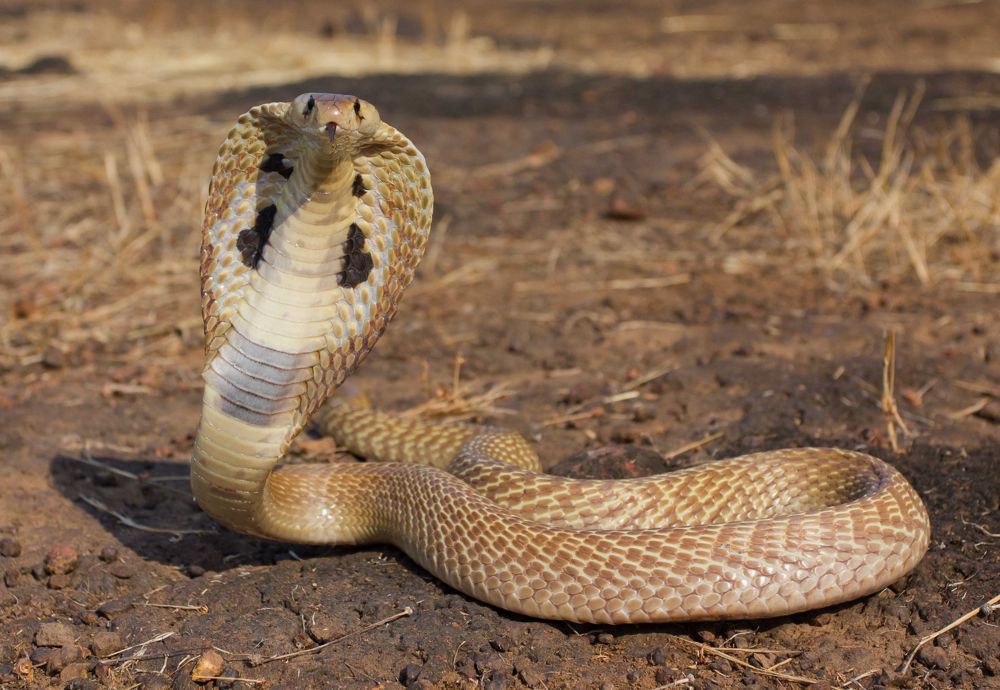
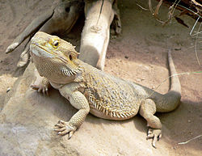

Змии
Змиија — безножно животно со долго, совитливо тело прекриено со лушпи кои се ќерамидесто наредени на него. Змиите спаѓаат во групата на влекачите. Се мисли дека змиите еволуирале од гуштерите, со кои делат многу заеднички карактеристики, а особено со т.н. безножни гуштери, кои имаат ситни и речиси незабележливи екстремитети. Но, за разлика од гуштерите, змиите имаат тенок расечен јазик, а кај нив отсуствува надворешно уво.

Гуштери
Гуштерите се животни од класата влекачи. Тие ја сочинуваат најголемата денешна група на влекачи, со повеќе од 4.300 видови со најразлични облици и големини.

Желки
Желките се животни од класата на влекачите. Се карактеризира со коскен или кожен штит, односно оклоп. Секој влекач со оклоп може да се нарече желка.